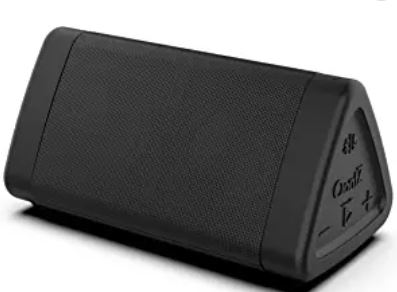
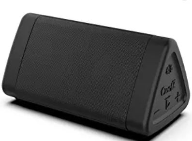

Oontz Angle 3
Developed by Cambridge Soundworks, Oontz Angle 3 speaker include dual speakers, 100 foot wireless range, crystal clear stereo sound, and waterproof.
 

Developed by Cambridge Soundworks, Oontz Angle 3 speaker include dual speakers, 100 foot wireless range, crystal clear stereo sound, and waterproof.